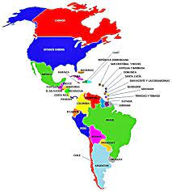
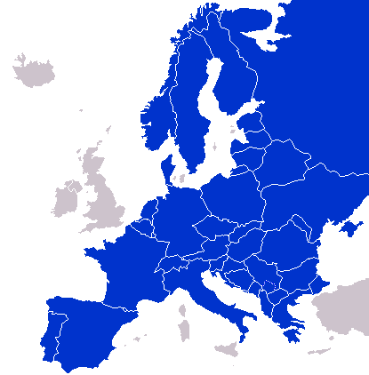
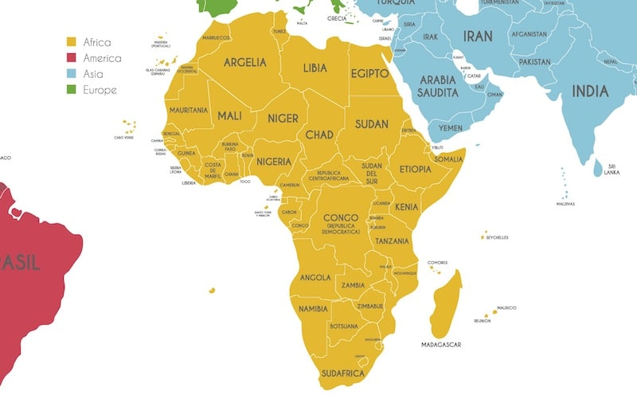
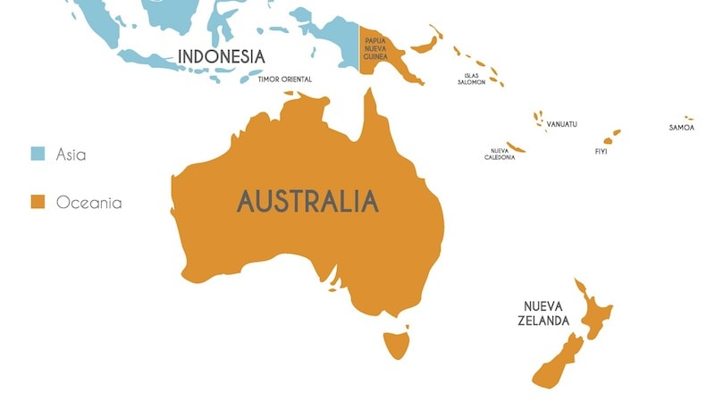
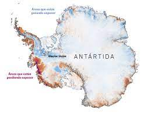

Tabla "Los Continentes"
Continentes
America
Europa
Asia
Africa
Oceania
Antartida
Canadá
Belice
Nicaragua
Venezuela
Chile
Bulgaria
Dinamarca
Noruega
Ucrania
Irlanda
Filipinas
Armenia
Birmania
Malasia
Vietnam
Ghana
Angola
Zimnanue
Uganda
Kenia
Fiyi
Nauru
Tonga
Nueva Zelanda
Palaos
La Antártida Argentina (Argentina)
La dependencia Roses (Nueva Zelanda)
Adelie Land (Francia)
Territorio Antárico Australiano (Australia)
Marye Byrd 8sin pertenencia)




